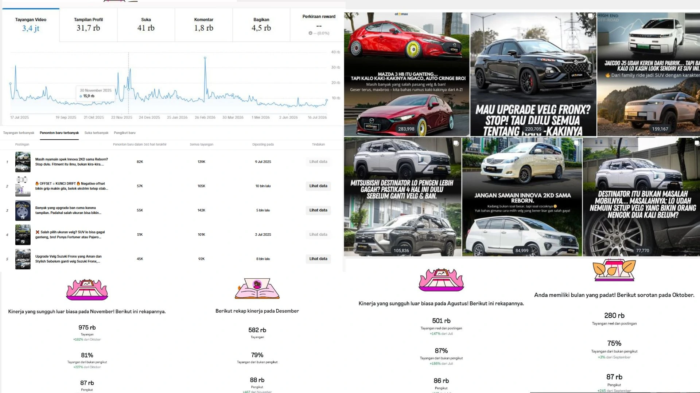

<!-- ========== SECTION OTOMAX KPI ========== -->
<section id="otomax" class="brand-section">
  <!-- Elemen .wrap memicu max-width 1140px & margin 0 auto dari CSS global -->
  <div class="wrap reveal">
    
    <!-- 1. Bagian Angka Performa KPI -->
    <div class="sub-block">
      <h3 class="sub-label">KPI (DATA PERFORMA 2025)</h3>
      <div class="stat-strip" style="display: flex; flex-wrap: wrap; justify-content: space-between; gap: 1px; background: var(--line);">
        <div class="stat-cell" style="flex: 1; min-width: 160px;"><div class="num">2,4Jt+</div><div class="lbl">TOTAL TAYANGAN</div></div>
        <div class="stat-cell" style="flex: 1; min-width: 160px;"><div class="num">83,3%</div><div class="lbl">BUKAN PENGIKUT</div></div>
        <div class="stat-cell" style="flex: 1; min-width: 160px;"><div class="num">88Rb</div><div class="lbl">TOTAL FOLLOWERS</div></div>
        <div class="stat-cell" style="flex: 1; min-width: 160px;"><div class="num">+227%</div><div class="lbl">KENAIKAN JANGKAUAN</div></div>
      </div>
    </div>
<!-- 2. Grafik Bar Chart -->
<div class="sub-block" style="text-align: center; margin: 30px 0;">
  <!-- SESUAIKAN DENGAN NAMA DI GITHUB LO SEKARANG -->
  
  <small style="display: block; margin-top: 12px; color: var(--ink-soft); font-family: 'IBM Plex Mono', monospace; font-size: 0.7rem; text-align: left;">
    Berdasarkan Data Metrik Instagram Insights Resmi (Periode Agustus - Desember 2025).
  </small>
</div>
    

    <!-- 3. Bagian STRATEGY -->
    <div class="sub-block">
      <h3 class="sub-label">STRATEGY</h3>
      <p style="text-align: justify; max-width: 100%;">
        Pendekatan saya di Otomax fokus pada konten edukatif, bukan hard-selling. Tiap carousel dan reel dirancang untuk menjawab pertanyaan nyata calon pembeli velg & ban — ukuran, offset, PCD, cara baca spek — dengan tone "konsultan yang paham", bukan sales yang agresif. Pendekatan yang sama saya terapkan untuk konten edukasi seputar ban & velg mobil listrik (EV), demi menjaga posisi brand yang netral dan informatif.
      </p>
    </div>

    <!-- 4. Bagian DATA & INSIGHT BREAKDOWN -->
    <div class="sub-block">
      <h3 class="sub-label">DATA & INSIGHT BREAKDOWN (2025)</h3>
      <ul style="padding-left: 20px; text-align: justify; color: var(--ink-soft); font-size: 0.92rem; line-height: 1.7;">
        <li style="margin-bottom: 12px;"><strong>Puncak Jangkauan Organik (November 2025):</strong> Menghasilkan total 975.000 tayangan, melesat tajam sebesar +182% dari bulan sebelumnya. Didominasi oleh struktur konten berbasis tren modifikasi kaki-kaki mobil yang memicu interaksi tinggi, di mana 81% dari total audiens berasal dari non-followers (+227%).</li>
        <li style="margin-bottom: 12px;"><strong>Validasi Pola Konten Viral (Agustus 2025):</strong> Fase awal strategi berhasil menembus angka 501.000 tayangan (+147% dari bulan Juli) dengan rasio penemuan akun baru dari non-followers sebesar 87%. Hal ini membuktikan bahwa algoritma video pendek (Reels) bekerja optimal merambah audiens target di luar basis pengikut yang sudah ada.</li>
        <li style="margin-bottom: 12px;"><strong>Retensi Pengikut yang Sehat (Desember 2025):</strong> Setelah lonjakan besar di November, grafik penayangan bertumpu stabil di angka 582.000 tayangan dengan rasio non-followers sebesar 79%, namun berhasil memperkuat basis komunitas dengan total pertumbuhan pengikut bersih mencapai 88.000 followers (+467 pertumbuhan baru).</li>
        <li style="margin-bottom: 12px;"><strong>Efisiensi Strategi:</strong> Komposisi distribusi penayangan menunjukkan performa organik yang sangat dominan, di mana sebanyak 83,3% dari total 2.432.913 tayangan murni digerakkan secara organik lewat penyusunan *hook* visual dan optimalisasi SEO konten, sementara porsi iklan berbayar (Ads) hanya berkontribusi minim sebesar 26,6%.</li>
      </ul>
    </div>

    <!-- 5. Bagian Contoh Video Konten (Sample Content Type) -->
    <div class="sub-block">
      <h3 class="sub-label">Sample Content Type</h3>
      <div class="thumb-grid" style="display: grid; grid-template-columns: repeat(2, 1fr); gap: 20px; max-width: 640px; margin-bottom: 24px;">
        
<!-- KOLOM KIRI: KONTEN UNTUK ENGAGEMENT -->
<a href="https://www.instagram.com/p/DMusQmCPx-5/" target="_blank" style="text-decoration: none; display: block; color: inherit;">
  <!-- Ditambahkan ?v=1 di ujung file agar browser langsung membaca gambar paling baru -->
  
  <div style="margin-top: 10px;">
    <strong style="font-size: 0.85rem; color: var(--gold); display: block; font-family: 'IBM Plex Mono', monospace; text-transform: uppercase;">Konten Ulasan</strong>
    <p style="font-size: 0.82rem; color: var(--ink-soft); line-height: 1.4; margin-top: 4px; text-align: justify;">
      Video ulasan produk dan edukasi mendalam mengenai fitment kaki-kaki mobil. Dibuat khusus untuk memicu interaksi, menaikkan engagement, dan membangun trust audiens secara organik.
    </p>
  </div>
</a>

<!-- KOLOM KANAN: KONTEN UNTUK ADS -->
<a href="https://www.instagram.com/reels/DPMEpS4kYT_/" target="_blank" style="text-decoration: none; display: block; color: inherit;">
  <!-- Ditambahkan ?v=1 di ujung file agar browser langsung membaca gambar paling baru -->
  
  <div style="margin-top: 10px;">
    <strong style="font-size: 0.85rem; color: var(--gold); display: block; font-family: 'IBM Plex Mono', monospace; text-transform: uppercase;">Konten Iklan Ads</strong>
    <p style="font-size: 0.82rem; color: var(--ink-soft); line-height: 1.4; margin-top: 4px; text-align: justify;">
      Video komersial dengan penekanan pada promosi dan hard-selling produk. Menggunakan hook visual yang kuat, dirancang untuk kebutuhan distribusi paid ads demi meningkatkan penjualan langsung.
    </p>
  </div>
</a>  

      </div>
    </div>

  </div>
</section>
